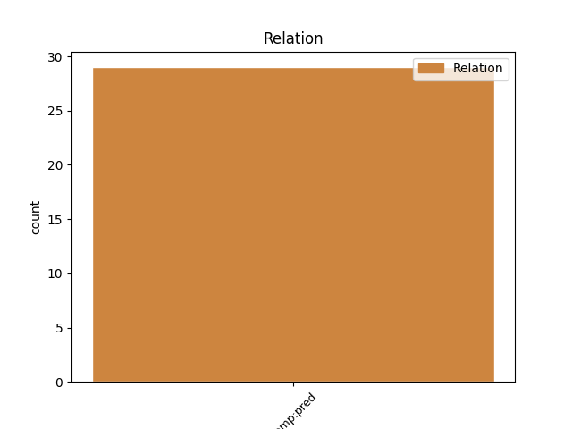
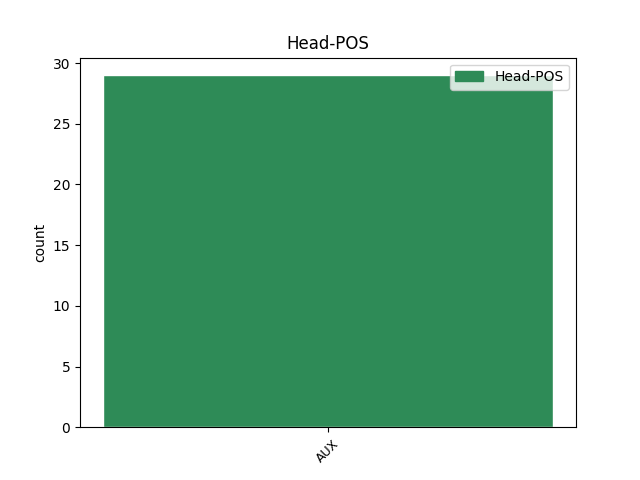
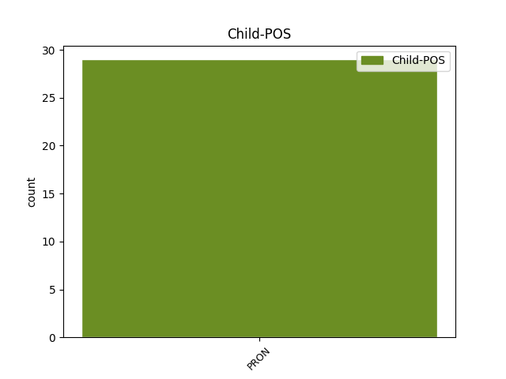

Distribution of features within this leaf



Agreement Rules sorted by frequency.
- When the dependent token is the predicative complements(comp:pred) of the head token, and the dependent token is PRON.
1 Kopā _ _ _ _ 0 _ _ _
2 ar _ _ _ _ 0 _ _ _
3 arhitektūru _ _ _ _ 0 _ _ _
4 un _ _ _ _ 0 _ _ _
5 būvniecību _ _ _ _ 0 _ _ _
6 izglītības _ _ _ _ 0 _ _ _
7 nozare _ _ _ _ 0 _ _ _
8 ir būt AUX vcnipii30an Evident=Fh|Mood=Ind|Person=3|Polarity=Pos|Tense=Pres|VerbForm=Fin|Voice=Act 0 _ _ _
9 tā tā PRON pd3fsnn Case=Nom|Gender=Fem|Number=Sing|Person=3|PronType=Dem 8 comp:pred _ LvtbNodeId=a-z46-p12s3w9|SpaceAfter=No
10 , _ _ _ _ 0 _ _ _
11 kur _ _ _ _ 0 _ _ _
12 ir _ _ _ _ 0 _ _ _
13 visaugstākā _ _ _ _ 0 _ _ _
14 atbilstība _ _ _ _ 0 _ _ _
15 starp _ _ _ _ 0 _ _ _
16 iegūto _ _ _ _ 0 _ _ _
17 izglītību _ _ _ _ 0 _ _ _
18 un _ _ _ _ 0 _ _ _
19 turpmāko _ _ _ _ 0 _ _ _
20 nodarbošanos _ _ _ _ 0 _ _ _
21 ( _ _ _ _ 0 _ _ _
22 Latvijas _ _ _ _ 0 _ _ _
23 Universitāte _ _ _ _ 0 _ _ _
24 , _ _ _ _ 0 _ _ _
25 Latvijas _ _ _ _ 0 _ _ _
26 Universitātes _ _ _ _ 0 _ _ _
27 aģentūra _ _ _ _ 0 _ _ _
28 “ _ _ _ _ 0 _ _ _
29 Latvijas _ _ _ _ 0 _ _ _
30 Universitātes _ _ _ _ 0 _ _ _
31 Filozofijas _ _ _ _ 0 _ _ _
32 un _ _ _ _ 0 _ _ _
33 socioloģijas _ _ _ _ 0 _ _ _
34 institūts _ _ _ _ 0 _ _ _
35 ” _ _ _ _ 0 _ _ _
36 , _ _ _ _ 0 _ _ _
37 SIA _ _ _ _ 0 _ _ _
38 Baltkonsults _ _ _ _ 0 _ _ _
39 , _ _ _ _ 0 _ _ _
40 2007 _ _ _ _ 0 _ _ _
41 ) _ _ _ _ 0 _ _ _
42 . _ _ _ _ 0 _ _ _
Disagree Examples:
1 Sofija _ _ _ _ 0 _ _ _
2 piespieda _ _ _ _ 0 _ _ _
3 rādītājpirkstu _ _ _ _ 0 _ _ _
4 pie _ _ _ _ 0 _ _ _
5 degungala _ _ _ _ 0 _ _ _
6 spogulī _ _ _ _ 0 _ _ _
7 un _ _ _ _ 0 _ _ _
8 sacīja _ _ _ _ 0 _ _ _
9 : _ _ _ _ 0 _ _ _
10 „ _ _ _ _ 0 _ _ _
11 Tu _ _ _ _ 0 _ _ _
12 esi būt AUX vcnipii2san Evident=Fh|Mood=Ind|Number=Sing|Person=2|Polarity=Pos|Tense=Pres|VerbForm=Fin|Voice=Act 0 _ _ _
13 es es PRON pp10snn Case=Nom|Number=Sing|Person=1|PronType=Prs 12 comp:pred _ LvtbNodeId=a-d199-p29s1w13|SpaceAfter=No
14 . _ _ _ _ 0 _ _ _
15 ” _ _ _ _ 0 _ _ _
1 Tā _ _ _ _ 0 _ _ _
2 kā _ _ _ _ 0 _ _ _
3 arī _ _ _ _ 0 _ _ _
4 tagad _ _ _ _ 0 _ _ _
5 nebija _ _ _ _ 0 _ _ _
6 nekādas _ _ _ _ 0 _ _ _
7 atbildes _ _ _ _ 0 _ _ _
8 , _ _ _ _ 0 _ _ _
9 viņa _ _ _ _ 0 _ _ _
10 apgrieza _ _ _ _ 0 _ _ _
11 teikto _ _ _ _ 0 _ _ _
12 otrādi _ _ _ _ 0 _ _ _
13 un _ _ _ _ 0 _ _ _
14 sacīja _ _ _ _ 0 _ _ _
15 : _ _ _ _ 0 _ _ _
16 „ _ _ _ _ 0 _ _ _
17 Es _ _ _ _ 0 _ _ _
18 esmu būt AUX vcnipii1san Evident=Fh|Mood=Ind|Number=Sing|Person=1|Polarity=Pos|Tense=Pres|VerbForm=Fin|Voice=Act 0 _ _ _
19 tu tu PRON pp20snn Case=Nom|Number=Sing|Person=2|PronType=Prs 18 comp:pred _ LvtbNodeId=a-d199-p31s1w19|SpaceAfter=No
20 . _ _ _ _ 0 _ _ _
21 ” _ _ _ _ 0 _ _ _
1 Kāda _ _ _ _ 0 _ _ _
2 ciema _ _ _ _ 0 _ _ _
3 iedzīvotāja _ _ _ _ 0 _ _ _
4 , _ _ _ _ 0 _ _ _
5 redzot _ _ _ _ 0 _ _ _
6 mūsu _ _ _ _ 0 _ _ _
7 interesi _ _ _ _ 0 _ _ _
8 par _ _ _ _ 0 _ _ _
9 uzraktiem _ _ _ _ 0 _ _ _
10 , _ _ _ _ 0 _ _ _
11 tūdaļ _ _ _ _ 0 _ _ _
12 ir _ _ _ _ 0 _ _ _
13 klāt _ _ _ _ 0 _ _ _
14 ar _ _ _ _ 0 _ _ _
15 savu _ _ _ _ 0 _ _ _
16 milzīgo _ _ _ _ 0 _ _ _
17 lācim _ _ _ _ 0 _ _ _
18 līdzīgo _ _ _ _ 0 _ _ _
19 suni _ _ _ _ 0 _ _ _
20 un _ _ _ _ 0 _ _ _
21 jautā _ _ _ _ 0 _ _ _
22 , _ _ _ _ 0 _ _ _
23 vai _ _ _ _ 0 _ _ _
24 mēs _ _ _ _ 0 _ _ _
25 esam būt AUX vcnipii1pan Evident=Fh|Mood=Ind|Number=Plur|Person=1|Polarity=Pos|Tense=Pres|VerbForm=Fin|Voice=Act 0 _ _ _
26 tie tas PRON pd3mpnn Case=Nom|Gender=Masc|Number=Plur|Person=3|PronType=Dem 25 comp:pred _ LvtbNodeId=a-p116-p11s6w26|SpaceAfter=No
27 , _ _ _ _ 0 _ _ _
28 kuriem _ _ _ _ 0 _ _ _
29 var _ _ _ _ 0 _ _ _
30 pasūdzēties _ _ _ _ 0 _ _ _
31 par _ _ _ _ 0 _ _ _
32 dažiem _ _ _ _ 0 _ _ _
33 noplēstiem _ _ _ _ 0 _ _ _
34 uzrakstiem _ _ _ _ 0 _ _ _
35 . _ _ _ _ 0 _ _ _
1 Mēs _ _ _ _ 0 _ _ _
2 esam būt AUX vcnipii1pan Evident=Fh|Mood=Ind|Number=Plur|Person=1|Polarity=Pos|Tense=Pres|VerbForm=Fin|Voice=Act 0 _ _ _
3 tie tas PRON pd3mpnn Case=Nom|Gender=Masc|Number=Plur|Person=3|PronType=Dem 2 comp:pred _ LvtbNodeId=a-p5950-p8s3w3|SpaceAfter=No
4 , _ _ _ _ 0 _ _ _
5 kas _ _ _ _ 0 _ _ _
6 pārvalda _ _ _ _ 0 _ _ _
7 savu _ _ _ _ 0 _ _ _
8 viedokli _ _ _ _ 0 _ _ _
9 . _ _ _ _ 0 _ _ _